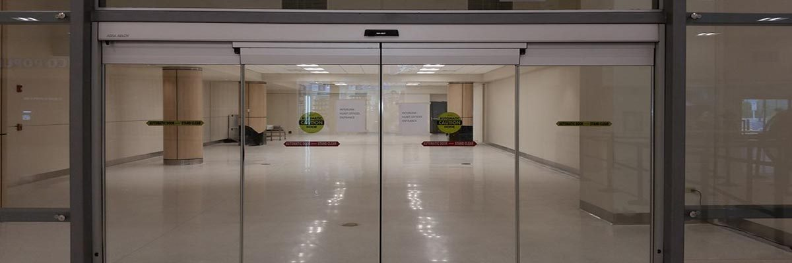
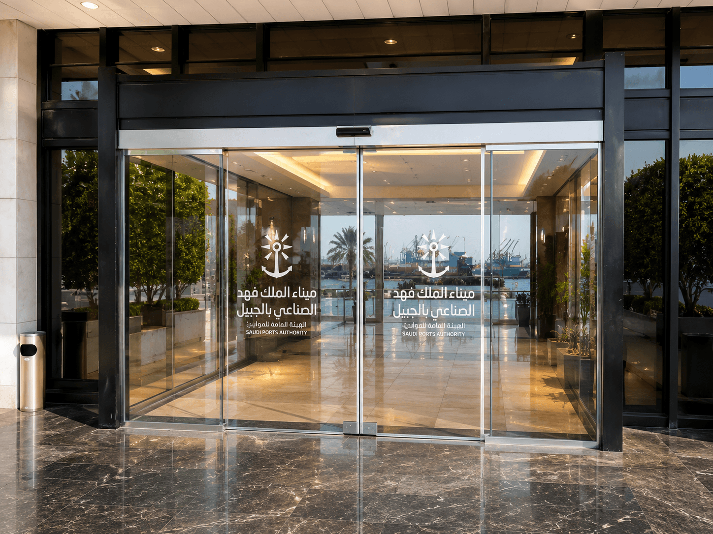

Elegant Entrances.
Engineered to Last.
مداخل أنيقة.
مصممة لتدوم.
Modern Entrances for High-Traffic Venues مداخل عصرية للأماكن ذات الحركة العالية
Automatic glass doors combine an elegant, transparent appearance with smooth, sensor-controlled movement — ideal for venues that need to welcome high volumes of people without physical contact or delay. تجمع الأبواب الزجاجية الأوتوماتيكية بين المظهر الشفاف الأنيق والحركة السلسة التي تتحكم فيها الحساسات — مثالية للأماكن التي تحتاج إلى استقبال أعداد كبيرة من الأشخاص دون تلامس بدني أو تأخير.
At Madar Randa, we supply and install automatic glass doors in three configurations — sliding, double-leaf, and hospital-specific — each engineered for the traffic and safety demands of its setting. في مدار رندا، نورّد ونركّب الأبواب الزجاجية الأوتوماتيكية بثلاث تشكيلات — سحابة، وضلفتين، ومخصص للمستشفيات — كل منها مصمم لمتطلبات الحركة والسلامة في بيئته.

What Sets Automatic Glass Doors Apart ما يميز الأبواب الزجاجية الأوتوماتيكية
Smart Motion Sensorsحساسات ذكية للحركة
Automatic detection of approaching pedestrians for touch-free entry.كشف تلقائي لحركة الأشخاص المقتربين للدخول دون تلامس.
Smooth, Contact-Free Movementحركة سلسة دون تلامس
Opens and closes without any physical effort from the user.تُفتح وتُغلق دون أي جهد بدني من المستخدم.
Full Accessibilityإمكانية وصول كاملة
Welcoming entry for wheelchairs, carts, and people with special needs.دخول ميسّر للكراسي المتحركة والعربات وذوي الاحتياجات الخاصة.
Advanced Safety Sensorsحساسات أمان متقدمة
Dual-beam detection prevents closure while someone is in the opening.كشف ثنائي الشعاع يمنع الإغلاق أثناء وجود شخص في الفتحة.
Energy Efficientكفاءة في استهلاك الطاقة
Minimizes uncontrolled air exchange between interior and exterior.يقلل تسرب الهواء غير المنضبط بين الداخل والخارج.
Custom Dimensionsأبعاد مخصصة
Built to suit your exact architectural opening, standard or wide.مصممة لتناسب فتحتك المعمارية بدقة، قياسية أو واسعة.
Three Configurations, One Reliable System ثلاث تشكيلات، نظام واحد موثوق
Where Automatic Glass Doors Excel أين تتميز الأبواب الزجاجية الأوتوماتيكية
Why This Product Is Worth the Investmentلماذا يستحق هذا المنتج الاستثمار
A poorly specified glass door shows its faults immediately — misaligned sensors, sluggish response, and a first impression that undercuts the building behind it. We select systems built for continuous high-traffic operation, not occasional use.الباب الزجاجي رديء التحديد يُظهر عيوبه فوراً — حساسات غير متوازنة، استجابة بطيئة، وانطباع أول يقلل من قيمة المبنى خلفه. نختار أنظمة مصممة للتشغيل المستمر بحركة عالية، لا للاستخدام العرضي.
Whether the entrance is a mall frontage, a hospital corridor, or an office lobby, the right configuration and correct sensor calibration make the difference between a door that impresses and one that becomes a maintenance headache.سواء كان المدخل واجهة مركز تجاري أو ممر مستشفى أو ردهة مكتب، فإن التشكيل الصحيح والمعايرة الدقيقة للحساسات هما الفارق بين باب يترك انطباعاً رائعاً وآخر يتحول إلى عبء صيانة.
Our certified installation teams handle the complete process — structural assessment, system fitting, sensor calibration, and commissioning. No subcontractors. No shortcuts.تتولى فرق التركيب المعتمدة لدينا العملية كاملة — تقييم البنية الإنشائية، تركيب النظام، ضبط الحساسات، والتشغيل التجريبي. دون مقاولين فرعيين أو اختصارات.
Automatic Glass Door Questionsأسئلة عن الأبواب الزجاجية الأوتوماتيكية
Ready to specify your glass doors?مستعد لتحديد أبوابك الزجاجية؟
No obligation. Our engineers respond within 24 hours.دون أي التزام. مهندسونا يستجيبون خلال 24 ساعة.